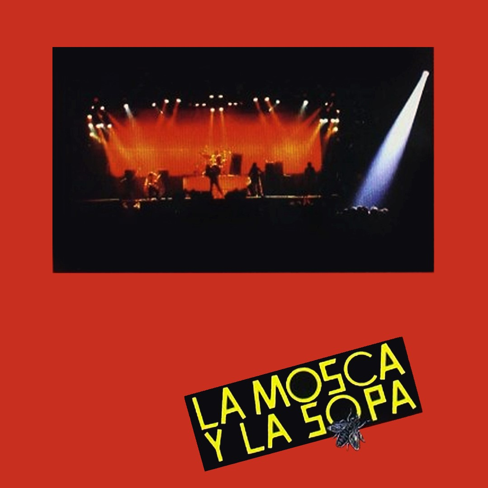

Los 90s
La consagración masiva: de los estadios colmados a una discografía cada vez más ambiciosa.
El Fenómeno Cultural de los 90
En la década del 90, Patricio Rey y sus Redonditos de Ricota alcanzaron una escala inédita para la música independiente sudamericana. El crecimiento del público transformó las presentaciones en verdaderas fiestas populares que desbordaron salas y teatros para mudarse a estadios como Huracán, Racing y River Plate.
En medio de la convertibilidad y las transformaciones sociales de la época, la banda ofreció un refugio poético y una identidad inquebrantable a través de producciones discográficas cada vez más ambiciosas y complejas.
"Habían encontrado la fórmula de la felicidad en el país de la nada eléctrica, y la escalada parecía no tener fin."
La Escala de la Masividad
De los Clubes a los Estadios
Lo que empezó en pubs y teatros terminó colmando Huracán, Racing y River Plate. La demanda de entradas obligó a multiplicar fechas y a pensar cada show como un operativo de escala inédita para una banda sin sello ni auspiciantes.
La Fama sin Medios
Vendían discos de oro y agotaban estadios sin pasar por radio ni televisión. Esa ausencia deliberada se volvió, paradójicamente, un tema de cobertura constante: la prensa escribía sobre el fenómeno que se negaba a dejarse cubrir.
La Mosca y la Sopa
Uno de los discos más exitosos y masivos de la historia del rock nacional. Llegó en pleno auge del grupo con himnos como "Mi perro dinamita", "Un ángel para tu soledad" y "Salando las heridas".
La gráfica de Rocambole inmortalizó al gato con la boca abierta y la olla popular, una imagen que terminó en remeras y banderas de todo el país.

Lobo Suelto / Cordero Atado
Un proyecto conceptual editado como dos volúmenes simultáneos, construidos alrededor de los personajes de Lupus (el lobo) y Rulo (el cordero).
Entre el rock directo, el swing y las baladas, el álbum dejó clásicos como "Buenas noticias", "Yo caníbal" y "Etiqueta negra".


Luzbelito
Grabado entre San Pablo y Buenos Aires, es una de las obras más densas y conceptuales de la banda: un disco oscuro centrado en la figura de un diablo infante.
Contiene temas indispensables como "Juguetes perdidos", "Luzbelito y las sirenas" y "Mariposa Pontiac / Rock del país".